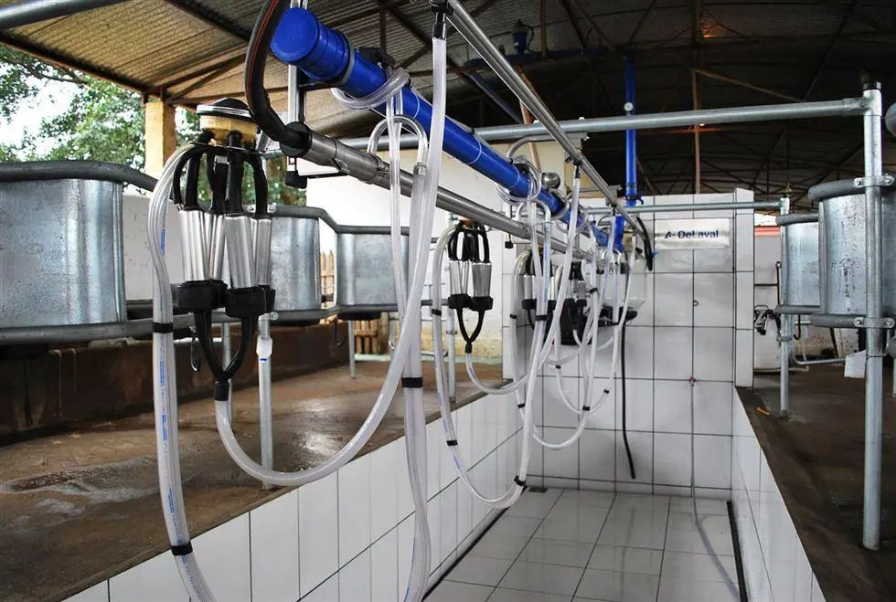
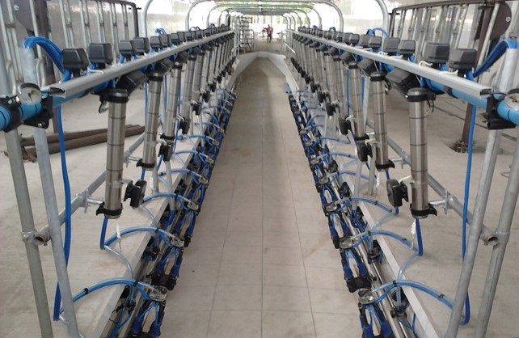
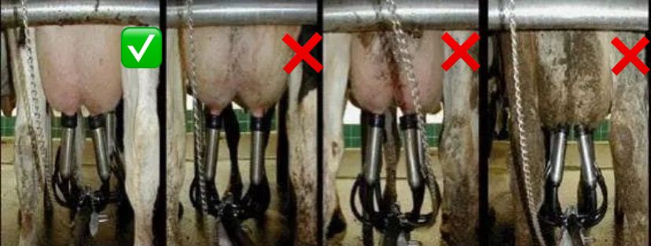

Ordenha rápida, higiênica e segura.
Prevenção da disseminação de doenças.
Vaca saudável
= mais leite
Responda as perguntas abaixo e veja o que você já sabe!
Quando a ordenha é feita errado, todos perdem.
Redução na produção e qualidade do leite
Maior risco de mastite — doença grave do úbere
Leite fora do padrão é descartado
Perda financeira para toda a fazenda
A mastite é uma inflamação do úbere da vaca. É causada principalmente por bactérias.
Pode ser difícil de ver! Nem sempre tem sintomas visíveis. Por isso, faça o teste do caneco a cada ordenha.
Úbere saudável
Leite limpo e normal
Mastite
Leite com grumos, úbere inchado
Siga cada etapa com cuidado para garantir um leite saudável.
Realizar limpeza e desinfecção antes do início da ordenha

Garantir que os equipamentos estejam limpos e em boas condições de uso

Realizar a higienização das mãos, pois elas podem conter bactérias contaminantes
Fazer a limpeza dos tetos, removendo a sujidade

Descartar os 3 primeiros jatos de leite em uma caneca de fundo preto, pois apresentam maior risco de contaminação e ajudam na identificação de alterações (como mastite)
Imergir completamente cada teto na solução desinfetante, utilizando produto adequado (ex: iodo ou outro desinfetante) e deixar agir por no mínimo 30 segundos
Secar com papel toalha individual (um por teto) e descartar o papel após o uso
Realizar o acoplamento correto das teteiras na vaca
Após o uso, higienizar as teteiras em solução desinfetante antes de utilizá-las na próxima vaca
Realizar a imersão dos tetos em solução desinfetante após a ordenha
Principal função: eliminação de bactérias contagiosas
O esfíncter permanece aberto por 20 a 30 minutos após a ordenha
Utilizar soluções como iodo para proteção
Oferecer alimento fresco e volumoso, mantendo as vacas em pé após a ordenha
Registre os dados de cada semana e veja como o rebanho está evoluindo.
Use os botões ↑ ↓ para colocar na sequência correta.
Use os botões ↑ ↓ para organizar as imagens na ordem correta da ordenha.
Se errar, clique em "Tentar novamente" para recomeçar.
Essas dicas simples salvam o leite e a saúde da vaca.
Mãos, tetos e equipamentos limpos evitam doenças
Fique de olho no leite e no úbere de cada vaca
Registre qualquer animal com problema
Se notar algo errado, avise logo